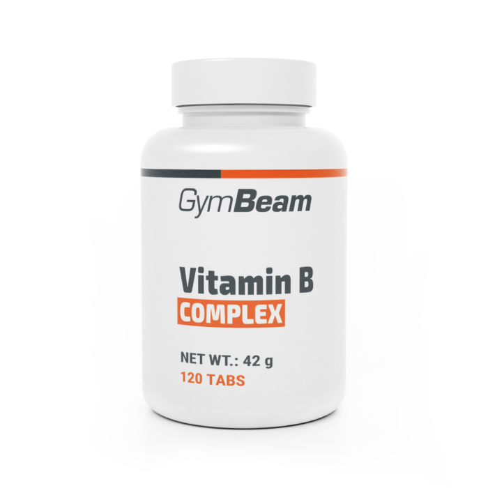

Vitamín B
Vitamíny skupiny B jsou důležité pro energii a správnou funkci nervového systému. Patří sem několik typů, například B1, B6 nebo B12. Každý z nich má svou specifickou roli v těle. Lidé je často doplňují při únavě nebo psychickém vyčerpání. Najdeme je v mase, vejcích, luštěninách a celozrnných potravinách.
Nedostatek vitamínů B může způsobit únavu, slabost nebo problémy s koncentrací. Suplementace může pomoci doplnit chybějící živiny. Přehnané dávky však mohou vést k zažívacím potížím. Kvalitní výrobek zajistí správné množství jednotlivých vitamínů. Správně užívané vitamíny skupiny B podporují energii i duševní pohodu.
